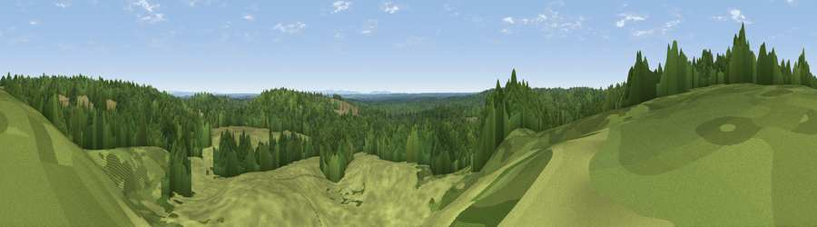

Viewpoint near Minstead
#41502 in England · top 66% of its area beats it · near Minstead · access?Where it is
The exact computed spot (SU 26212 10015). Click the marker for map links.
Public access: no public right of way or access land is recorded at this exact spot — it may be on private land. Computed from Natural England's CRoW access layer and OpenStreetMap rights of way — not the legal definitive map. Always verify locally.
The view, rendered

A 360° render of this exact spot computed from the terrain model, tree cover and land cover — summer colours, afternoon light, calibrated against photographs of famous viewpoints. Real trees, hedges and buildings will differ in detail.
The panorama
Grey silhouette: terrain skyline in each direction (720 bearings, Earth curvature and refraction included). Dashed green: skyline with trees (+15 m) and buildings (+8 m) as obstacles. Blue strip: how far the ground is visible on each bearing.
Where the view opens
Wedge length = distance to the farthest visible ground on that bearing (vegetation-aware). Rings at 10, 25 and 50 km.
What fills the view
61% woodland · 39% grassland
Angular shares of the visible panorama (visual magnitude), not map area. Landscape diversity 0.31 (0–1 Shannon).
Key numbers
More beautiful places nearby
The staircase of upgrades: each row has a higher view potential than everything closer. Driving times are estimates from straight-line distance, calibrated against real road routing — check an actual route before setting out.
| Place | Direction | Drive | Score |
|---|---|---|---|
| Viewpoint near Emery Down | SE · 1 km | ~4 min | 24.3 |
| Viewpoint near Minstead | NE · 3 km | ~7 min | 29.7 |
| Viewpoint near Emery Down | ESE · 3 km | ~8 min | 33.3 |
| Viewpoint near Bramshaw | N · 6 km | ~13 min | 35.1 |
| Viewpoint near Fritham | WNW · 6 km | ~13 min | 38.7 |
| Viewpoint near Frogham | WNW · 9 km | ~17 min | 40.2 |
| Viewpoint near Redlynch | NNW · 14 km | ~26 min | 40.8 |
| Viewpoint near West Grimstead | NNW · 15 km | ~27 min | 50.6 |
50.88903, -1.62872 · source: osm viewpoint · position refined by local search. Computed location — check access rights before visiting.